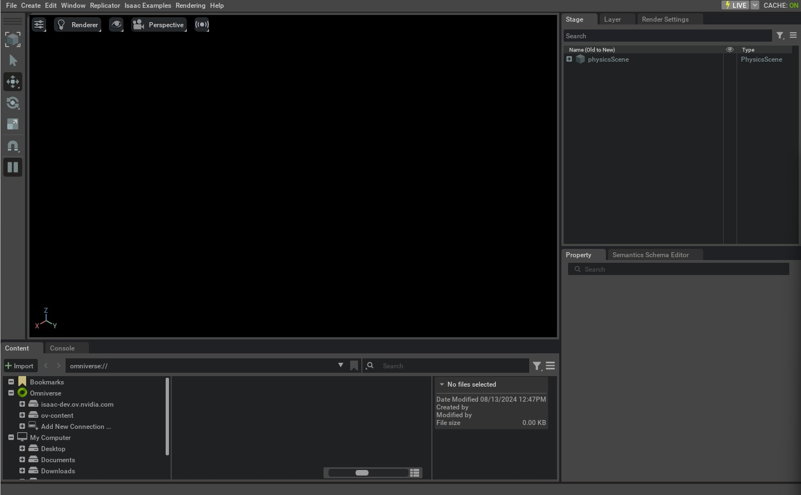

创建空场景
本教程介绍如何通过 Standalone Python Script
启动并控制 Isaac Sim Simulator。教程将在
Isaac Lab 中建立一个 Empty Scene，并介绍
Framework 中使用的两个主要
Class：
app.AppLauncher
和
sim.SimulationContext
。
开始本教程前，请先阅读 Isaac Sim Workflows ，初步了解 Simulator 的使用方式。
1 代码
本教程对应 scripts/tutorials/00_sim 目录中的
create_empty.py Script。
create_empty.py 的代码
# Copyright (c) 2022-2026, The Isaac Lab Project Developers (https://github.com/isaac-sim/IsaacLab/blob/main/CONTRIBUTORS.md).
# All rights reserved.
#
# SPDX-License-Identifier: BSD-3-Clause
"""This script demonstrates how to create a simple stage in Isaac Sim.
.. code-block:: bash
# Usage
./isaaclab.sh -p scripts/tutorials/00_sim/create_empty.py
"""
"""Launch Isaac Sim Simulator first."""
import argparse
from isaaclab.app import AppLauncher
# create argparser
parser = argparse.ArgumentParser(description="Tutorial on creating an empty stage.")
# append AppLauncher cli args
AppLauncher.add_app_launcher_args(parser)
# parse the arguments
args_cli = parser.parse_args()
# launch omniverse app
app_launcher = AppLauncher(args_cli)
simulation_app = app_launcher.app
"""Rest everything follows."""
from isaaclab.sim import SimulationCfg, SimulationContext
def main():
"""Main function."""
# Initialize the simulation context
sim_cfg = SimulationCfg(dt=0.01)
sim = SimulationContext(sim_cfg)
# Set main camera
sim.set_camera_view([2.5, 2.5, 2.5], [0.0, 0.0, 0.0])
# Play the simulator
sim.reset()
# Now we are ready!
print("[INFO]: Setup complete...")
# Simulate physics
while simulation_app.is_running():
# perform step
sim.step()
if __name__ == "__main__":
# run the main function
main()
# close sim app
simulation_app.close()2 代码解析
2.1 启动 Simulator
使用 Standalone Python Script 时，第一步是启动 Simulation Application。这项操作必须放在开头， 因为 Isaac Sim 的多个 Dependency Module 只有在 Simulation App 运行后才能使用。
可以通过导入 app.AppLauncher
Class 完成这项操作。该
Utility Class 封装了用于启动
Simulator 的
isaacsim.SimulationApp Class，
并提供了通过 Command-Line Arguments 和
Environment Variables 配置
Simulator 的机制。
本教程主要介绍如何向用户定义的 argparse.ArgumentParser
添加 Command-Line Options。将
Parser Instance 传给
app.AppLauncher.add_app_launcher_args()
Method 后，该 Method
会向其追加不同的 Parameters，包括以
Headless 模式启动
App、配置不同的
Livestream Options，以及启用
Off-Screen Rendering。
import argparse
from isaaclab.app import AppLauncher
# create argparser
parser = argparse.ArgumentParser(description="Tutorial on creating an empty stage.")
# append AppLauncher cli args
AppLauncher.add_app_launcher_args(parser)
# parse the arguments
args_cli = parser.parse_args()
# launch omniverse app
app_launcher = AppLauncher(args_cli)
simulation_app = app_launcher.app2.2 导入 Python Modules
Simulation App 运行后，便可以从 Isaac Sim 和其他 Libraries 导入不同的 Python Modules。这里导入以下 Module：
-
isaaclab.sim：Isaac Lab 中负责所有核心 Simulator-Related Operations 的 Sub-Package。
from isaaclab.sim import SimulationCfg, SimulationContext2.3 配置 Simulation Context
通过 Standalone Script 启动 Simulator 时，用户可以完整控制 Simulator 的 Play、 Pause 和 Step。 所有这些 Operations 都由 Simulation Context 处理。它负责各种 Timeline Events，同时也会为 Simulation 配置 Physics Scene 。
在 Isaac Lab 中，sim.SimulationContext
Class 继承自 Isaac Sim
的 isaacsim.core.api.simulation_context.SimulationContext，
使用户能够通过 Python 的 dataclass
Object 配置
Simulation，并处理
Simulation Stepping 中的若干细节。
本教程将 Physics Time Step 和
Rendering Time Step 均设为 0.01 秒。
为此，需要将这些数值传给 sim.SimulationCfg，再使用该配置创建
Simulation Context Instance。
# Initialize the simulation context
sim_cfg = SimulationCfg(dt=0.01)
sim = SimulationContext(sim_cfg)
# Set main camera
sim.set_camera_view([2.5, 2.5, 2.5], [0.0, 0.0, 0.0])创建 Simulation Context 后，我们只配置了作用于 Simulated Scene 的 Physics，其中包括用于 Simulation 的 Device、 Gravity Vector，以及其他 Advanced Solver Parameters。此时，要运行 Simulation 还需要完成两个主要步骤：
- 设计 Simulation Scene：添加 Sensors、Robots 和其他 Simulated Objects。
- 运行 Simulation Loop：推进 Simulator，并向 Simulator 设置数据或从中读取数据。
为了先专注于 Simulation Control，本教程首先在 Empty Scene 中讲解第 2 步。后续教程将介绍 第 1 步，以及如何使用 Simulation Handles 与 Simulator 交互。
2.4 运行 Simulation
配置好 Simulation Scene 后，首先需要调用
sim.SimulationContext.reset()
Method。该 Method
会播放 Timeline，并初始化
Simulator 中的
Physics Handles。在第一次推进
Simulator 前必须调用它，否则
Simulation Handles 将无法正确初始化。
播放 Simulation Timeline 后，我们设置一个简单的
Simulation Loop：只要
Simulation App 仍在运行，就不断推进
Simulator。
sim.SimulationContext.step()
Method 接受 render
Argument，用于决定本次
Step 是否包含
Rendering-Related Events 的更新。该
Flag 默认设为 True。
# Play the simulator
sim.reset()
# Now we are ready!
print("[INFO]: Setup complete...")
# Simulate physics
while simulation_app.is_running():
# perform step
sim.step()2.5 退出 Simulation
最后，调用 isaacsim.SimulationApp.close()
Method 停止
Simulation Application 并关闭其窗口。
# close sim app
simulation_app.close()3 执行代码
了解完整代码后，现在运行 Script 并查看结果：
./isaaclab.sh -p scripts/tutorials/00_sim/create_empty.py
此时 Simulation 应当正在运行，并且
Stage 应当正在
Rendering。若要停止
Simulation，可以关闭窗口，或者在
Terminal 中按 Ctrl+C。

向上述 Script 传入 --help，
即可查看此前由 app.AppLauncher
Class 添加的不同
Command-Line Arguments。要以
Headless 模式运行
Script，可执行：
./isaaclab.sh -p scripts/tutorials/00_sim/create_empty.py --headless现在，我们已经基本了解如何运行 Simulation。接下来进入下一篇教程，学习如何向 Stage 添加 Assets。